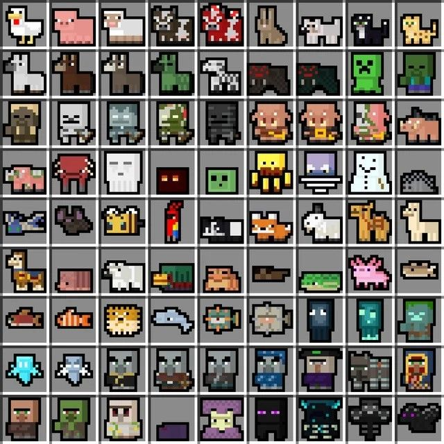
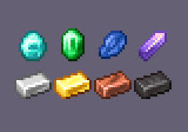

Minecraft: Explora, Construye y Sobrevive
Minecraft: Explora, Construye y Sobrevive
Deja que tu imaginación vuele
Minecraft: Explora, Construye y Sobrevive
Deja que tu imaginación vuele
Minecraft es un videojuego de mundo abierto donde los jugadores pueden explorar, construir y sobrevivir en un universo hecho de bloques.
En Minecraft puedes explorar un mundo abierto lleno de bosques, cuevas, océanos y montañas, recolectar recursos como madera y minerales, y fabricar herramientas para sobrevivir. Puedes construir desde casas sencillas hasta ciudades enormes, cultivar alimentos, criar animales y enfrentarte a criaturas como zombis y creepers. También puedes crear mecanismos con redstone, viajar a otras dimensiones como el Nether y The End, y derrotar al Dragón del Fin. En modo creativo tienes recursos ilimitados para construir todo lo que imagines, lo que hace que el juego ofrezca aventuras y posibilidades casi infinitas.
Supervivencia: Debes conseguir tus propios recursos, cuidar tu salud y hambre, y defenderte de criaturas.
Creativo: Tienes recursos ilimitados y puedes volar para construir libremente sin peligro.
Aventura: Diseñado para mapas creados por otros jugadores, con reglas especiales
Hardcore: Similar a supervivencia, pero con mayor dificultad y solo una vida.
Hostiles:Atacan al jugador (como creepers, zombis y esqueletos).
Pasivos:No atacan (como vacas, ovejas y aldeanos).
Neutrales:Solo atacan si los provocas (como enderman o lobos).

El Overworld:Es donde comienzas el juego. Aquí encuentras la mayoría de los biomas, animales, aldeas y recursos básicos. Es el lugar donde construyes tu primera casa y sobrevives a las noches.
Nether:Es una dimensión oscura y peligrosa llena de lava y criaturas hostiles. Aquí puedes encontrar materiales especiales como la netherita y estructuras como fortalezas.
The End:Es una dimensión misteriosa formada por islas flotantes. Aquí vive el Dragón del Fin, el jefe final del juego. Derrotarlo es uno de los mayores desafíos en Minecraft.
Madera:Sirve para crear herramientas básicas y estructuras.
Minerales:Como hierro, oro y diamante, que permiten fabricar herramientas más resistentes.
Alimentos:Para recuperar energía en modo supervivencia.
Redstone:Material especial para crear mecanismos y circuitos.
